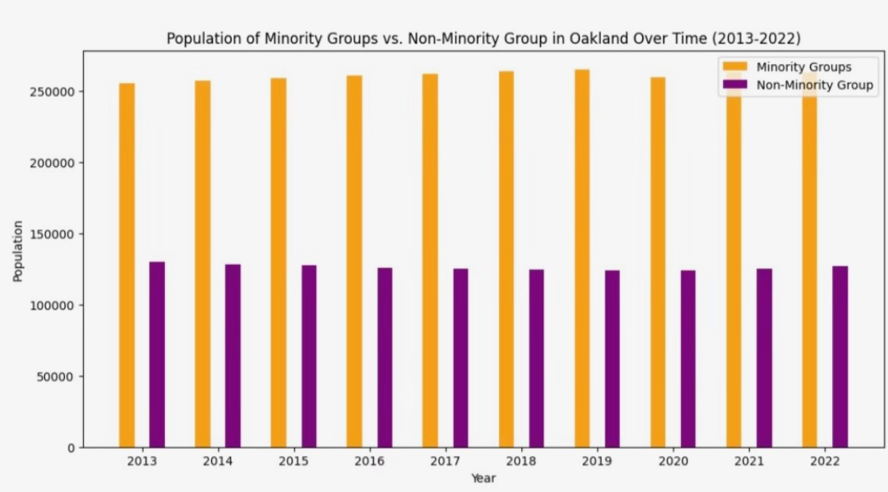
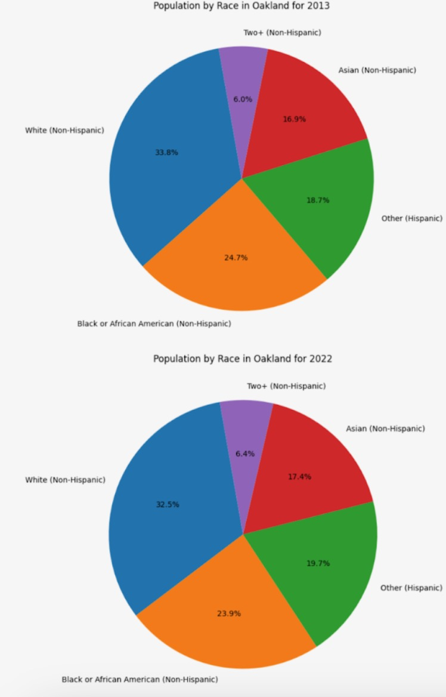
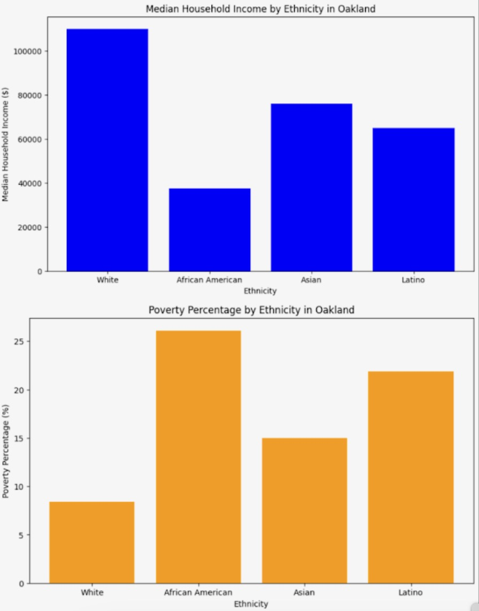
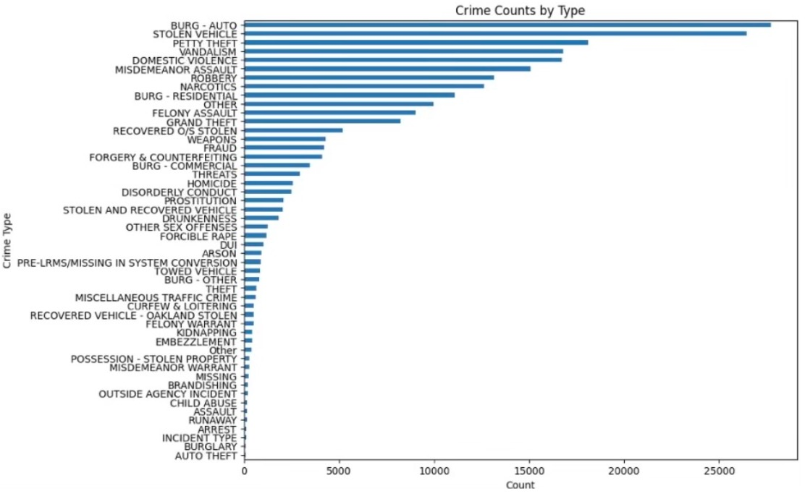
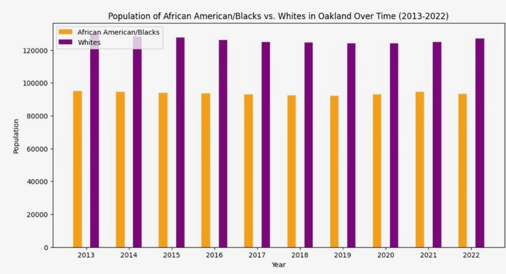
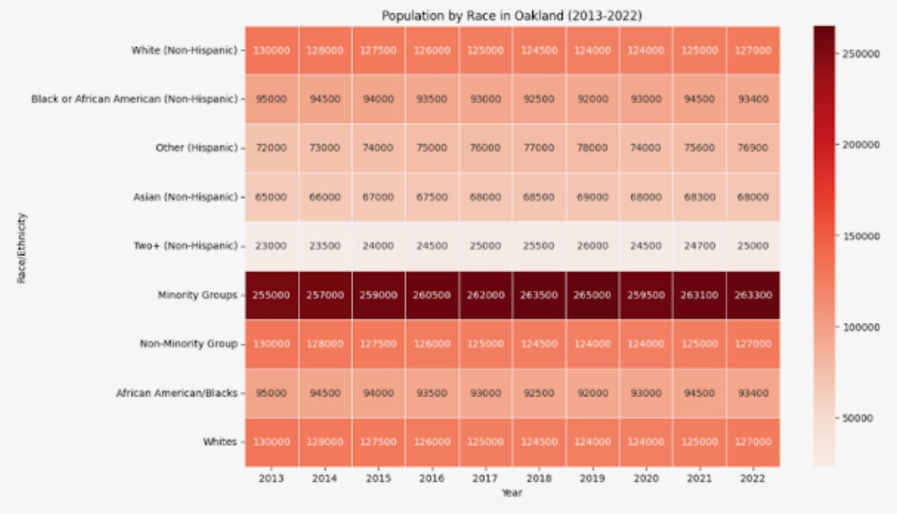
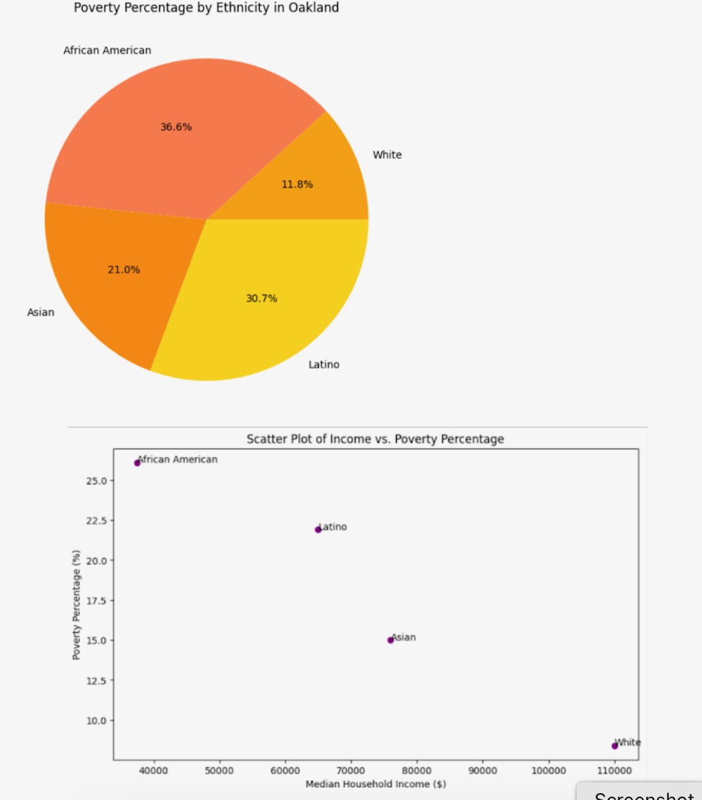

The goal for this project is to analyze homeownership, incomes, and crime rate data, in an attempt to highlight how they individually and collectively affect racial demographics in Oakland. A quick google search shows that SF/Oakland is considered to be one of the most, if not the most, gentrified city in the U.S. We hope to uncover why such extreme gentrification is occurring, how it is affecting the minority groups within Oakland, and what racial demographics will look like in the future.
Our aim for this project was to increase awareness among fellow students and young adults who are living within the Bay, where the effects of the housing crisis are becoming more and more apparent. Our visualizations rely heavily on public data provided by the City of Oakland, and we used applications from Critical Race Theory and Marxism to help develop our underlying critical analysis of the issues described above. Most of our data has been curated from the last twenty years, but we attempt to show that the evolution of gentrification within Oakland has been affected by laws and regulations implemented in the 20th century, as well as how racial discrimination is directly correlated to the disproportionate high rates of low-income families in minority groups.
While our main area of analysis is on racial demographics and homeownership in relation to the ongoing gentrification of Oakland, we also wanted to investigate how crime affects and is affected by gentrification. Crime has historically been used to unfairly punish minority groups, and has helped enable the gentrification of previously “violent” cities. Before analyzing the data, we hypothesized that there would be an increase in non-violent crimes in Oakland, specifically crimes related to theft and burglary. While our data does show a significant increase in nonviolent crimes, there was also a near doubling of violent crimes, such as homicides, and an overall increase in crimes each year.
Fair Housing Law of 1968: This law protects minority groups from discrimination when buying homes, renting, getting a mortgage, etc., but there has been little to no change in the percentage of Black homeownership in the U.S., as of 2018 we actually see an increase in White homeownership. National Housing Act of 1934: This law was passed after the Great Depression in an attempt to make housing/mortgages more affordable. But this law ostracized minority groups and often forced them to move away from suburban areas, and led to the creation of poor neighborhoods primarily occupied by African Americans and other minority groups. Author Richard Rothstein actually described this act as a “state-sponsored system of segregation”.
How can gentrification be measured? We have utilized the methods employed by Mujahid et al to measure gentrification levels in neighborhoods in the bay area. Landis Method: This method measures changes within neighborhoods based on a single factor: median household income. The paper by Mujahid et al used census data from 1990 and 2013, and labeled neighborhoods as “declining if their 1990 median household incomes were in the top four deciles and their 2013 median household incomes had declined by two or more deciles.” Because this method relies on minimal information it is easy to collect data, but there are concerns on the accuracy of capturing the gentrification process using only income. Urban Displacement Project: Use of the Regional Early Warning System dataset which contains variables on gentrification and displacement from a variety of census tracts. This method then categorizes the census tracts into eight groups. A benefit to using this method is the large amounts of data can provide “early warning signs of displacement”, but it is believed to be difficult to replicate in other cities throughout America as it requires large amounts of data that are often unavailable to the public. Freeman Method: Described as the “gold standard of measuring neighborhood gentrification.” This method defines census tracts as gentrifiable if they meet three criteria over a defined period of time. The neighborhood/area’s census tract was below or at the median income level. The housing stock percentage built within twenty years was at or below the median compared to all census tracts in the “metropolitan area”. 50% or more of the census blocks we labeled as urban. Gang Injunctions: The research paper by Eric K. Arnold explains how gang injunctions are impacting gentrification in Oakland. Additionally, Arnold questions if gang injunctions are truly helping public safety or adding to the constant gentrification happening in Oakland. George Galvis from the Communities United for Restorative Youth Justice (CURYJ) explains that "Gang injunctions are very effective tools for areas ripe for gentrification.” Gang injunctions are court orders that are issued in a civil lawsuit to limit the activities of a group of individuals who act like a street gang. The main purpose of a gang injunction is to stop gang activity that is considered a public nuisance in a specific area. And the increase in gang injunctions has resulted in gentrification happening specifically in the Bay Area. Anti-Eviction Mapping Project: This project relates to gentrification because according to the project’s main website, “ this project is a data-visualization, critical cartography, and multimedia storytelling collective documenting dispossession and resistance upon gentrifying landscapes.” This project works with numerous community partners and studies the entanglements of racial capitalism, techno-capitalism, and political economy while providing tools for the public to prevent gentrification. Maintaining antiracist and feminist analyses as well as decolonial methodology, the project creates tools and disseminates data contributing to collective resistance and movement building.
By using the method using the amount of gang injunctions being constantly implemented within the Bay Area we can analyze the growth or decline of minority groups in Oakland over time. Arnold explains that gangs are more likely to be part of a minority therefore using this graph will help measure the gentrification we see happening over time in Oakland. Even though it’s not an obvious decline, the graph shows there’s a slight decline in minority groups as it gets closer to the current year. Additionally Arnold explains that in the last decade, census data shows that Oakland's black population went down by 25 percent. A study by Urban Strategies in 2010 showed that North Oakland lost the most African Americans as an area. Even before gang injunctions and the foreclosure crisis, gentrification was already underway in Fruitvale. This shows that gentrification was a bigger issue than we thought. I knew gentrification was an issue however that is not the case. Additionally, as a UC Berkeley student that visits Oakland and San Francisco during the weekend, I can see the change in demographics with certain neighborhoods. Especially since I go to Oakland for popular restaurants or eating spots I see more non-minority groups than the previous times.
Home ownership in Oakland and San Francisco offers interesting insights due to the distinct socioeconomic dynamics of these neighboring cities. In San Francisco, the median home price is among the highest in the nation, often exceeding 1.4 million, driven by a strong tech industry presence and limited housing supply. Because of this, the high costs has led to a low homeownership rate, with many residents preferring to rent instead. Furthermore, San Francisco’s zoning laws and historical preservation regulations further restrict new housing developments, exacerbating affordability issues. In Oakland, while home prices are significantly lower in San Francisco, in recent years there’s been a rapid increase, with median prices around $800,000 plus. This city has experienced substantial gentrification, with rising housing costs pushing out long-term, lower-income residents. Oakland’s homeownership rate is higher than that of San Francisco, in some part due to more available land for new housing developments and less restrictive zoning laws. However, the influx of higher-income residents from San Francisco has intensified competition for housing, contributing to affordability challenges similar to those in its more affluent neighbor. The median household income data indicates significant income disparities among different ethnic groups in Oakland. Whites have the highest median income, surpassing $100,000, while African Americans have the lowest, around $40,000. These income disparities directly influence homeownership rates, as higher incomes facilitate the ability to afford home purchases, secure favorable mortgage terms, and accumulate savings for down payments. The poverty percentage data highlights that African Americans have the highest poverty rate (over 25%) compared to white people (around 10%). High poverty rates correlate with lower homeownership rates, as individuals in poverty struggle to save for a home purchase, meet credit requirements, and manage ongoing homeownership costs. The higher poverty rates among African Americans and Latinos point to systemic barriers that have long restricted their economic mobility and access to homeownership. Efforts to improve housing affordability in Oakland must consider these historical and current economic disparities. Policies aimed at increasing affordable housing stock, providing down payment assistance, and addressing credit access can help mitigate these disparities. Additionally, educational programs focused on financial literacy and homeownership preparation can empower minority communities to take advantage of home buying opportunities. Overall, the data highlights the complex interplay of historical discrimination, income disparity, and present-day housing market dynamics in shaping homeownership rates in Oakland. Addressing these issues requires targeted policy interventions that consider both the historical context and current socio-economic challenges to foster equitable homeownership opportunities for all ethnic groups in Oakland.
This heat graph shows the population in Oakland from 2013-2022. There was an initial decrease in the White population in the early 2010’s but we begin to see a pick up in the non-minority populations after 2018, along with a slight decrease in the African American population. The increased cost of living (caused by the gentrification of Oakland) has made it difficult for low-income residents to continue living within Oakland. Increased cost of living is not the only factor that has contributed to the decreases in minority housing/population. Displacement of individuals due to construction (transportation, work buildings, etc) is equally to blame for these statistics. A new form of gentrification has emerged in recent years, being dubbed as “tech gentrification” may share blame for the ongoing displacement of families. Tech corporations have resided within San Francisco for decades, but as more and more companies emerge and expand, we begin to see a spillover from SF into neighboring cities. Tech gentrification has disproportionately affected minority groups and ties into a historically racialized housing market.
This model shows median household incomes in Oakland and the poverty percentage based on race. These graphs highlight the increasing gap between Whites and minority groups, especially those who are African American. For a Critical Race lens, it is apparent that the racial segregation and discrimination has had lasting effects on African American communities. Income and poverty disparities are deeply rooted in historical discrimination. Redlining, segregation, and discriminatory hiring practices limited African Americans’ economic opportunities, resulting in generational wealth gaps. These practices restricted access to homeownership and high-paying jobs, contributing to the current income disparity. Historically, African American and Latino communities had less access to quality education, which affects their earning potential today. Educational disparities, influenced by segregation and underfunded schools, have long-term effects on employment opportunities and income levels.
The data we have collected was gathered by the City of Oakland from 2013-2024. The table below shows the total number of crimes that occurred throughout the entire timeline. We can see that auto-burglary and stolen vehicles were the top crimes. To further explore the data, we created a graph that showed the number and types of crimes that occurred within each year (view in the visualization tab). From 2013 to 2024 there has been an increase in almost every type of crime, one such example is the 3,664 auto-burglaries in 2013 to 15,333 in 2023. It is during these ten years that we also see the most gentrification within Oakland, so is there a correlation between these two issues? We believe there is, gentrification can and has led to the decrease in standards of living for many minority groups as they cannot continue to afford housing, food, education, etc. These changes may be directly tied to the increase in thefts and burglaries that our data has shown. Even in recent years where there have been mass efforts to decriminalize petty crimes, such as Prop 47 in SF which allows shoplifters to steal up to $950 without being criminalized, the number of thefts has increased. There of course can be other factors attributing to this, gentrified areas tend to produce more government funding through taxes leading to a greater police presence which in turn may increase the number of detected crimes. The increase in crimes may also be attributed to the change in demographics, minority communities are often less inclined to report crimes, caused by a deep rooted distrust for police due to historical conflicts. While our group hypothesized that there would be an increase in nonviolent crimes, we were surprised to see that there was an increase in violent crimes as well. The total number of homicides in 2013 was 248, and in 2023 it had risen to 956. This data contradicts the common belief that gentrification decreases crimes. While our main goal for this project was to analyze the effects of gentrification on Oakland through homeownership demographics, utilizing crime statistics shows how gentrification affects many aspects of a community. Another interesting part of the crime data was that all forms of burglary but residential increased. Residential burglary actually decreased. Unfortunately, we could not find evidence for why this happened, but a hypothesis we formulated was that wealthy families who moved into Oakland are more inclined to purchase alarms and security systems, they have enough money to spend on such items. These alarms may disincentivize robbers from breaking into homes, leading to a decrease in the number of burglaries committed. Because crimes that are monitored by the police are on the rise, other factors must be attributing to the decrease in home burglaries. Further analysis on the number of security systems purchased within Oakland in the last decade and locations of crimes would be needed to formulate correlation between the data we found
In the graph above, it demonstrates that minority groups consistently outnumber non-minority groups from 2013 to 2022. Despite slight fluctuations, the overall trend indicates a relatively stable population for minority groups. Historically, Oaksland has been a diverse city because of historically known migration waves. For instance, the Great Migration in the early 20th century brought many African Americans to urban centers like Oakland to find better job opportunities and living conditions. Additionally, the city's longstanding immigrant communities have strengthened its minority populations.

This second graph reveals that the African American population has remained stable but lower than the white population, which has shown a slight increase. This trend can be connected to several historical factors. For instance, discriminatory housing policies like redlining, have historically affected African American communities, leading to economic disadvantages that continue in the present day. In recent years, gentrification and rising living costs have further impacted these communities, causing displacement and population shifts. Notably, the tech boom in the Bay Area, more specifically rooted from San Francisco, has attracted a more diverse workforce. This is another factor that should be considered when determining what may have altered demographic tendencies. During the same period, the housing crisis and ongoing gentrification continue to pressure minority groups, influencing these population dynamics.
The pie charts depicting Oakland's racial composition in 2013 and 2022 reveal a consistent distribution over the decade. This stability highlights several historical and present casualties. From a historical standpoint, Oakland’s diversity is rooted in historical migration patterns, including the Great Migration of African Americans in the early 20th century and subsequent immigration waves from Latin America and Asia. These movements established robust minority communities. Economic factors have also played a role. Despite the economic upheavals, many minority communities have remained stable due to strong community ties and resilience. While gentrification has led to displacement in some areas, it hasn’t drastically altered the city's overall racial makeup. Instead, it has caused shifts within neighborhoods rather than significant changes in the city-wide demographic proportions. Community organizations, cultural institutions, and social networks provide support and cohesion, helping to retain population stability.

The graph above portrays the influx of minority groups and the stable White population suggest changes in economic opportunities. Historically, minority communities had less access to high-paying jobs and quality education. Recent economic developments might attract diverse populations, yet disparities remain, as seen in the declining African American numbers. Efforts to improve housing policies and economic opportunities for minority groups might be changing the demographic landscape. However, the data indicate more work is needed to ensure African American communities benefit equally from these policies.

The scatter plot indicates a strong correlation between median household income and poverty percentage, showing that lower income levels are associated with higher poverty rates. These disparities can be linked to historical and present casualties. Historically, discriminatory practices like redlining and segregation restricted African Americans and Latinos from accessing homeownership and accumulating wealth. These policies created long-term economic disadvantages, evident today in their lower median incomes and higher poverty rates. The legacy of unequal education further exacerbated these issues, limiting access to high-paying jobs. In the current day, income inequality, gentrification, and limited access to affordable housing perpetuate these disparities. Minority communities often face systemic barriers in the housing market, leading to higher housing costs relative to their income. This financial strain contributes to the elevated poverty percentages observed.